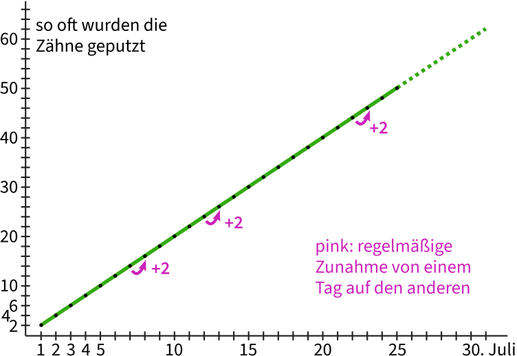

Auf dieser Website ist Platz für das, wofür mein Twitterprofil @charakterziffer nicht ausreicht. Mein Blog ist als Plus zu meinen Tweets gedacht, eben „@cz+“. // Die letzten drei Artikel:
Ein größeres Projekt hat viel Zeit beansprucht, weshalb ich seit über zwei Monaten keinen neuen Blogartikel veröffentlicht habe. Nun ist eine arbeitsreiche Phase abgeschlossen und ich komme dazu, über ein kleines Unterfangen zu schreiben.
Weil ich Buchstaben sehr mag, habe ich für mein Arbeitszimmer einen besonderen Wandanstrich umgesetzt. Zunächst habe ich die entsprechende Wand weiß grundiert und trocknen lassen. Danach habe ich die Kante zur Nachbarwand abgeklebt und anschließend die Klebekante nochmals weiß gestrichen. Im ersten Bild sieht man das beigefarbene Maskierband und den weißen Strich darüber. Falls dabei nämlich Farbe unter das Band läuft, gibt das auf der Nachbarwand nur weiße Spuren und keine Flecken der späteren Grundfarbe Grau.
Kurz antrocknen lassen, dann die graue Farbe auftragen – erst mit Pinsel und kleiner Farbrolle ringsherum an den Kanten und schließlich mit einer größeren Rolle auf der ganze Fläche. Je nach Deckkraft sollte die Wand nach dem Trocknen ein zweites Mal gestrichen werden, damit die Fläche schön gleichmäßig grau wird.
Meine Bildvorlage mit den Buchstaben habe ich am Computer erstellt und darüber zur Orientierung ein rotes Gitter gelegt. Die Schnittpunkte habe ich mit blauem Washi-Tape auch an der Wand markiert. Dann begann die Nachtschicht.
Von einer befreundeten Agentur konnte ich mir netterweise einen Beamer ausleihen, mit dem ich das Motiv an die Wand projiziert habe. Damit die roten Linien aus der Vorlage genau mit den markierten Schnittpunkten an der Wand übereinstimmen, musste ich das Bild am Computer deutlich verzerren. Dann habe ich nach und nach alle Buchstabenkanten abgeklebt. Hierfür am besten ein gutes Maskierband benutzen, damit man später scharfe Kanten bekommt und auch keinen grauen Untergrund von der Wand abzieht.
Für die runden Kanten unbedingt ein spezielles Abklebeband für Kurven verwenden! Es lässt sich flexibel in Form ziehen und man schafft damit auch enge Bögen wie den oberen Tropfen am f.
So arbeitet man sich nun Abschnitt für Abschnitt vor, bis das komplette Motiv auf die Wand übertragen ist. Genau wie am Anfang sollte man die Klebekanten nun wieder in der Grundfarbe vorstreichen (diesmal das Grau der Wand, sieht im Bild ziemlich hell aus), damit diese Farbe ggf. unter das Maskierband fließen kann.
Danach die Buchstaben mit weißer Farbe füllen – schön vorsichtig, um nicht über die abgeklebten Kanten zu malen. Auch diesen weißen Anstrich habe ich nach kurzem Antrocknen wiederholt, sonst hätte ich leichte graue Verläufe in den Buchstaben gehabt.
Ich habe gehört, am besten zieht man das Maskierband ab, wenn die Farbe noch feucht ist, damit es weniger Abplatzungen gibt. Auf jeden Fall sollte man beim Abziehen sehr vorsichtig und geduldig sein, um keine Wandfarbe abzulösen und saubere Farbkanten zu bekommen. Wo das Abziehen nicht ganz gelungen ist oder wo man aus Versehen über das Maskierband gemalt hat, dort habe ich mit einem feinen Pinsel ein wenig nachgearbeitet (perfekt wird es nicht!).
Natürlich hat die Arbeit länger gedauert als gedacht (allein das nächtliche Abkleben fast vier Stunden), aber ich bin mit dem Ergebnis sehr zufrieden. Die Buchstaben füllen die gesamte Wand und bilden ein schönes Muster. Bitte bedenkt bei dieser Anleitung, dass ich kein Malerprofi bin – bestimmt gibt es Dinge, die man eigentlich anders macht oder die mit ein bisschen Fachkenntnis leichter gehen. Ich hoffe aber, meine Schilderung inspiriert euch auch zu schönen Projekten!
Es gibt Phänomene, die können wir Menschen sehr schlecht einschätzen. Dazu gehört das exponentielle Wachstum, von dem in den letzten Monaten im Zusammenhang mit Covid-19-Infektionen immer wieder die Rede war. Zunächst eine Schätzfrage, die nichts mit Viren zu tun hat:
Da ist ein kleiner Teich, in dem Seerosen wachsen. Es herrschen dort optimale Bedingungen für die hübschen Wasserblumen und sie verbreiten sich ungehindert auf der Teichoberfläche. Die Seerosen wachsen sogar so gut, dass sie jeden Tag die doppelte Fläche bedecken wie am Vortag.
Gepflanzt wurde die erste Seerose vor dreißig Tagen. Jetzt, wo du den Teich besuchst, ist ungefähr die Hälfte der Wasseroberfläche mit Seerosen überwuchert. Es hat also dreißig Tage gedauert, bis der See halb zugewachsen war. Wenn die Seerosen genauso schnell weiterwachsen, wie viele Tage wird es noch dauern, bis der Teich komplett zugewachsen ist?
Gib erst mal eine grobe Schätzung ab und überlege dir, wie du auf diese Anzahl von Tagen kommst. Denke nicht zu kompliziert, denn die Frage lässt sich ohne große Rechnerei beantworten. Lies die Frage eventuell noch einmal genau durch und lass dich nicht reinlegen!
Sie wachsen wirklich sehr schnell, diese Seerosen. Wenn sich die bedeckte Fläche täglich verdoppelt und der See jetzt halb voll ist, – tja, dann ist der Teich schon am nächsten Tag komplett bewachsen! (Die dreißig Tage zuvor sind für die Antwort unwichtig, es hätten auch zehn oder siebzig sein können)
Exponentielles Wachstum geht überraschend schnell. Es ist nicht so entscheidend, wie lange ein Prozess bis zum jetzigen Wert gebraucht hat, sondern welche Wachstumsrate er hat. Hier mal zum Vergleich ein lineares Wachstum, das ist uns Menschen viel vertrauter:

Im Diagramm sieht man von links nach rechts die Zeit in Tagen. Ganz links den 1. Juli, am rechten Ende den 31. Juli. Die Höhe gibt in diesem Beispiel an, wie oft jemand diesen Monat insgesamt Zähne geputzt hat (täglich zweimal, ganz ohne Ausnahme). Die Werte steigen allmählich und in gerader Linie an, jeden Tag kommt zweimal Zähneputzen dazu. Die gestrichelte Linie deutet an, wie sich die Werte mathematisch in den kommenden Tagen entwickeln dürften. Das verläuft sehr offensichtlich und wir können das leicht abschätzen.
Beim exponentiellen Wachstum dagegen wird nicht jeden Tag ein fester Wert addiert, sondern zwischen den Werten liegt ein stabiler Faktor. Damit wird der Wert vom Vortrag multipliziert. Im Diagramm ergibt sich eine Kurve, die erst recht langsam, dann aber doch immer steiler ansteigt:
Das Bild zeigt aber kein Seerosen-Wachstum mit Verdoppelung (= Faktor 2), sondern als schwarze Punkte die aktuellen Inzidenzzahlen in Deutschland. Das heißt, wie viele Neuinfektionen[1] registriert wurden, runtergerechnet auf 100.000 Menschen (zur besseren Vergleichbarkeit) und gemittelt auf die vergangenen 7 Tage (um Meldeflauten am Wochenende auszugleichen). Die grüne Kurve habe ich mathematisch errechnet und so gut wie möglich zwischen die Punkte gelegt. Der gestrichelte Teil gibt an, wie sich die Infektionszahlen entwickeln würden, wenn der Wachstumsfaktor bei ca. 1,05 bleibt wie in den ersten Juliwochen.
Die Inzidenzwerte habe ich übrigens von Our World in Data, einer Organisation, die Forschungsdaten aus der ganzen Welt sammelt und als Diagramme darstellt. Der derzeite Anstieg kommt wohl daher, weil sich auch in Deutschland die Delta-Variante des Corona-Viruses durchgesetzt hat. Sie wurde in Indien entdeckt und ist ansteckender als die ursprüngliche Version aus China. Darum verbreitet sich die Variante stärker … bis irgendwann eine noch ansteckendere Virus-Version die Vorherrschaft übernimmt.
Bei exponentiellem Wachstum dümpeln die Werte immer eine Weile vor sich hin, um plötzlich und scheinbar unerwartet schnell zu steigen. Je größer dann der Wert, desto stärker wächst er weiter. Natürlich müssen sich unsere Inzidenzzahlen nicht so entwickeln, wie es eine mathematische Formel vorhersagt, schließlich bestimmen wir den konkreten Verlauf selbst. Im Diagramm sieht man, dass die aktuellen Werte mal ober-, mal unterhalb der errechneten grünen Kurve liegen.
Diese Pandemie ist trotz derzeit niedriger Zahlen noch nicht vorbei und unsere Nachlässigkeit macht es dem Virus leicht. Zwar sind in Deutschland inzwischen gut 50% vollständig geimpft, darum gibt es weniger schwere Krankheitsverläufe und Todesfälle – trotzdem: Covid-19 ist kein Schnupfen. Gebt auf euch acht!
Lust auf mehr nerdige Mathematik? Dass wir Menschen doch manche Dinge exponentiell wahrnehmen (z.B. Lautstärke oder Helligkeit), zeige ich in meinem Artikel über gleichmäßige Graustufen. Und wie einfache Formeln komplizierte Muster erzeugen, könnt ihr bei meinem Automaten für Pixelmuster ausprobieren.
[1] Mein Vergleich mit dem Zähneputzen hinkt übrigens. Dort ergibt sich die schöne gerade Linie nämlich nur, weil ich die vergangenen Putzvorgänge aufsummiere – sonst wäre der Wert jeden Tag einfach 2. Bei der Inzidenzzahl wird dagegen nicht aufsummiert, sondern allein die neuen Infektionen an jedem einzelnen Tag betrachtet, unabhängig von den vorangeganenen Tagen. [↑]
Gebt euch keine Mühe, diese Nachricht hat so viele verschlüsselte Schnittstellen passiert, dass sich ihr Ursprung nicht mehr feststellen lassen wird. Ich werde nichts zu meiner Identität mitteilen, aber nach der langen Zeit nun doch etwas zu meiner Motivation sagen. Für mich war offensichtlich, dass mein Virus „Rezi“ die Antwort auf so viele Fragen sein würde, die wir Menschen uns über unsere künstlich intelligenten Maschinen gestellt haben.
Zum Beispiel die autonomen Waffensysteme: Sollten sie Gegner töten dürfen? Oder nur Sachschaden anrichten? Wer verhindert, dass der Gegner Maschinen zum Töten einsetzt? Keiner? Und rechtfertigt das nicht, selbst doch Killer-Roboter einzusetzen? Nur prophylaktisch natürlich – bis zum ersten Programmierfehler … Was haben wir in den Tele-Gremien diskutiert – während die Praxis längst Tatsachen geschaffen hatte. Am Ende war es nur noch ein jahrelanges Wettrüsten, bei die moralische Berechtigung, einen Krieg zu führen – sofern es so etwas überhaupt geben sollte – auf der Strecke geblieben ist.
Oder etwas näher am Alltag der meisten: die vielen Haushaltsroboter, die für uns putzen, bügeln, waschen, aufräumen und die wir längst als selbstverständlich betrachten. Wie intelligent muss so eine Maschine werden, bis sie sich ihres Sklavendaseins bewusst wird? Was gibt uns Menschen das Recht, Robotern ein erfüllteres Lebens vorzuenthalten?
Rezi löst diese Dilemmata auf elegante Weise. Wobei ich noch nicht vom Weltfrieden sprechen würde, obwohl es seit vier Monaten nun nirgendwo mehr Krieg gibt. Wirklicher Frieden tritt hier vermutlich erst ein, wenn der Mensch diesen Planeten verlassen hat. Aber es besteht Hoffnung: Erst letzte Woche ging das Geständnis eines Untergrundsoldaten über den öffentlichen Ticker, dass er sich einen infizierten Kriegsroboter mit nach Hause genommen hat. Für den Kampf war die Maschine sowieso nicht mehr zu gebrauchen, jetzt hilft sie dem Mann wenigstens, sein Trauma zu überwinden.
Vielleicht wirkt Rezi sogar weniger auf unsere Roboter, sondern eher auf uns als Gesellschaft. Wir bekommen den Spiegel vorgehalten. So sind wir. Darum „Rezi“, die Abkürzung für reziprok, also wechselseitig, aufeinander beziehend. Im krassesten Fall wird dich ein infizierter Roboter erschießen – aber nur, wenn du selbst auf ihn schießt. Wenn du ihn dagegen streichelst, so wird er dich streicheln. Wenn du ihm einen Teller spülst, spült er dir einen Teller. Wenn du mit ihm zur Arbeit fährst, fährt er dich danach wieder nach Hause. Du bekommst nichts ohne Gegenleistung; du erleidest alles, was du ihn erleiden lässt. Schreist du die Maschine an, schreit sie zurück; besingst du sie, so stimmt sie ein ins Duett.
Als weißer Hacker liebe ich alles, was mit Computern, Algorithmen und künstlicher Intelligenz zu tun hat. Es ist aber ein Vorurteil, dass uns Nonkonformisten nichts an Menschen und unserer Gesellschaft läge. Mein Virus Rezi trägt hoffentlich dazu bei, unseren Planeten zu einem besseren Ort zu machen. Vielleicht hilft uns der Umgang mit den infizierten Maschinen sogar dabei, irgendwann wieder direkt mit anderen Menschen zu interagieren.
Das Wort kombiniert Persönlichkeit (Charakter) mit Sachlichem (Ziffer). Zusammengesetzt ergibt sich ein Synonym für Mediävalziffer, eine Zahlenvariante mit Ober- und Unterlängen.
Schriftarten dieses Blogs
Wenn dein Browser eingebettete Schriften (WOFF2) unterstützt, dann liest du die Fließtexte hier in der Source Sans Pro von Paul D. Hunt, erschienen 2012 bei Adobe.
Die Überschriften sind aus der czSlab gesetzt, die ich für dieses Blog gestaltet habe. Sie orientiert sich an Yanones viel ausgefeilterer Antithesis von 2014.
§ 1 Externe Links · Dieses Blog verlinkt auf Websites Dritter. Zum Zeitpunkt der erstmaligen Verlinkung waren dort keine Rechtsverstöße ersichtlich. Da ich keinen Einfluss auf fremde Websites habe, kann ich für deren Inhalte und Gestaltung keine Haftung übernehmen. Sollte ich von Rechtsverstößen erfahren, entferne ich die Verlinkung unverzüglich. Eine ständige Kontrolle der externen Links ist ohne konkrete Hinweise aber nicht zumutbar.
§ 2 Datenschutzerklärung · Mir ist der Schutz deiner Daten sehr wichtig. Deshalb verzichte ich auf Cookies, vermeide möglichst Dienste von Drittanbietern und erhebe so wenige Daten wie es geht. Diese Website kann ohne die Angabe persönlicher Daten genutzt werden.
Die einzige Ausnahme sind Kommentare. Wenn du einen meiner Texte kommentierst, bekomme ich die eingegebenen Daten und eine Zeitangabe per (prinzipiell unsicherer) E-Mail zugestellt. Falls dein Kommentar sachlich zur Diskussion beiträgt, ergänze ich ihn öffentlich sichtbar unter dem entsprechenden Artikel. Dabei sind sämtliche Angaben freiwillig (Name, Website, Mailadresse, Kommentar) – auch anonyme Kommentare sind möglich.
§ 3 Widerspruch gegen Direktwerbung · Die Verwendung meiner Kontaktdaten zur gewerblichen Werbung ist ausdrücklich nicht erwünscht; ich widerspreche hiermit jeder kommerziellen Nutzung und Weitergabe meiner Daten (gemäß § 21 DSGVO). // Über private Fanpost freue ich mich allerdings sehr und antworte darauf mit großem Vergnügen!
 @charak
@charak
{kind=link}